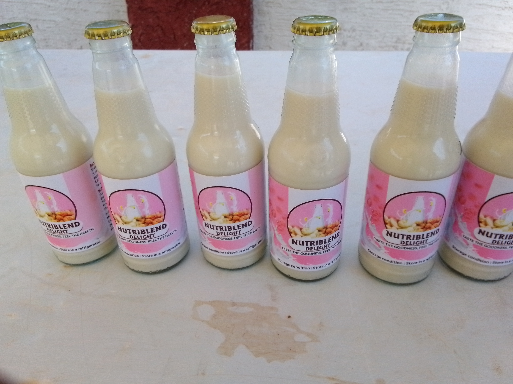

Our Products
Non-dairy milk alternatives
Products

Powdered Milk

Liquid Milk
Liquid Milk
Nutriblend is an agro-processing startup dedicated to adding value to cashews and tiger nuts by producing high-quality dairy-free milk and powdered milk alternatives. Our mission is to address the limited availability of nutritious and affordable non-dairy options in Ghana, especially for individuals with lactose intolerance and those who prefer plant-based alternatives. Our products are carefully crafted to combine the nutritional benefits of cashews and tiger nuts, offering a wholesome alternative to traditional dairy products. By reducing the reliance on cashew exportation, we aim to boost local processing and contribute to the growing demand for dairy-free alternatives in Ghana.
At Nutriblend, we are committed to making a positive impact on our community and the environment. We prioritize job creation for youth and women in rural areas, with a focus on empowering women. By increasing the income of smallholder farmers and adopting eco-friendly packaging, we strive to promote sustainability and economic growth. Our goal is to make plant-based dairy alternatives accessible, nutritious, and affordable while contributing to a healthier, more sustainable future for everyone.
BSc Hospitality Management
Marketing and finance Lead
BSc Agricultural and Bio-Resource Engineering
Operations Lead
BSc Electrical and Electronic Engineering
Production Lead

Charles - Sunyani

Alex Simons - Sunyani
Martin -Fiapre

Serina Simons - Accra
Matthew - Fiapre